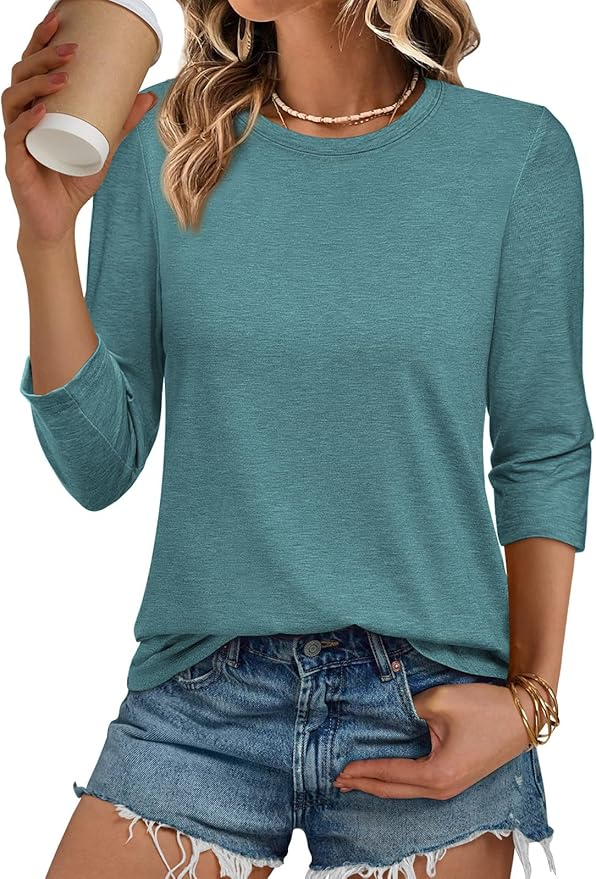

Amy is considering purchasing a sweater online. Please read the product page on the next page and decide whether she should purchase it.
Women › Clothing › Tops & Tees › Casual Tops

StyleComfort Women's 3/4 Sleeve Crew Neck Top - Blue Green
★★★★★
$22.99
Free returns · Free delivery on qualifying orders
Color: Blue Green
Size
In stock
Delivery available within 3-5 business days
Delivery available within 3-5 business days
✦
Customers SayAI-generated based on customer reviewsCustomer reviews
Showing reviews from verified purchasers. Browse as many as you wish.